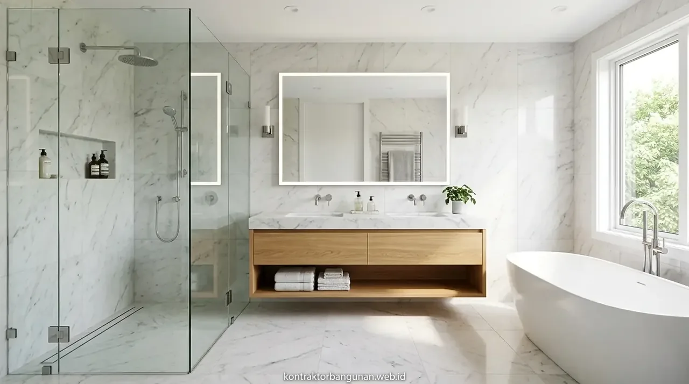

1. Berapa Estimasi Rata-Rata Biaya Renovasi Kamar Mandi per Meter di Tahun 2026?
Estimasi biaya renovasi kamar mandi per meter berkisar antara Rp1.800.000 hingga Rp4.500.000 per m² sudah mencakup material keramik, waterproofing, dan upah tukang.
Berdasarkan data statistik Asosiasi Kontraktor Renovasi Bangunan Indonesia 2025, tercatat bahwa 52,7% keluhan kebocoran rumah tinggal berasal dari area kamar mandi lantai atas yang tidak di-waterproofing secara benar saat renovasi mandiri. Biaya perbaikan kerusakan sekunder akibat rembesan dak kamar mandi bahkan dapat menelan biaya 2 kali lipat dari biaya awal renovasi.
Dengan memilih paket renovasi profesional bersama Kontraktor Bangunan, seluruh tahapan teknis mulai dari pembongkaran, pelapisan waterproofing 2 komponen, instalasi pipa air panas/dingin, hingga pemasangan sanitair bergaransi dikerjakan dengan standar mutu teruji.
- Tentukan Tata Letak (Layout): Pastikan posisi kloset duduk, shower, floor drain, dan wastafel memudahkan jalur kemiringan pipa buangan (slope minimal 2%).
- Pilih Keramik Bertekstur Anti-Slip: Gunakan keramik bertekstur kasar/matte untuk lantai basah guna mencegah bahaya terpeleset.
- Gunakan Nat Keramik Epoxy: Pengisi nat berbasis resin epoxy jauh lebih tahan terhadap asam pembersih porselen dibanding semen nat biasa.
2. Apa Saja Rincian Pekerjaan dalam Paket Renovasi Kamar Mandi Borongan Penuh?
Paket borongan penuh meliputi pembongkaran keramik lama, perbaikan instalasi pipa air bersih/kotor, waterproofing lantai dan dinding basah, plesteran, pemasangan granit, dan instalasi saniter.
Dalam sistem borongan penuh all-in, pemilik rumah tidak perlu dipusingkan dengan pembelian semen instan, pasir ayak, fitting pipa, atau pengangkutan puing sisa bongkaran. Rincian tahapan pengerjaan meliputi:
- Pembongkaran & Pembersihan: Merontokkan keramik lama, kloset lama, dan membersihkan plesteran lapuk hingga ke dasar beton struktur.
- Plumbing & Kelistrikan: Pemasangan pipa PVC AW berkualitas, jalur water heater, stop kontak dengan proteksi ELCB, dan titik lampu LED tahan uap.
- Waterproofing Membrane / Coating: Pelapisan semen polimer elastis pada lantai dan dinding area basah setinggi minimal 180 cm (area shower).
- Pemasangan Keramik / Granit Tile: Pemasangan keramik dinding dan lantai dengan level kemiringan terukur menuju floor drain anti-odor.
- Fitting Sanitair: Pemasangan kloset duduk baru, wastafel gantung, kran mixer panas dingin, shower set, dan partisi kaca tempered shower.

Pemasangan keramik dinding berukuran presisi serta penataan pipa plumbing tersembunyi menjamin kerapian dan fungsi higienis jangka panjang.
3. Mengapa Sistem Waterproofing Menjadi Komponen Paling Krusial Saat Renovasi?
Waterproofing mencegah rembesan air merusak struktur pelat beton lantai 2, merusak plafon di bawahnya, dan menyebabkan dinding kamar berjamur.
Banyak pemilik rumah mengira bahwa pasangan keramik dan nat semen sudah cukup kedap air. Kenyataannya, nat semen biasa bersifat higroskopis (menyerap air) dan mudah retak akibat pemuaian air hangat. Tanpa lapisan waterproofing di bawah adukan keramik, air mandi akan meresap perlahan ke pori-pori pelat beton bertulang, menyebabkan korosi pada besi tulangan serta bercak jamur hitam di plafon lantai bawah.
Standar kerja kami selalu menyertakan pengujian genangan air (flood test) selama minimal 48 jam sebelum proses pemasangan keramik dimulai untuk memastikan nol kebocoran.
4. Tabel Rincian Paket Biaya Renovasi Kamar Mandi per Meter Persegi
Berikut adalah tabel komparasi paket renovasi kamar mandi lengkap material dan jasa yang dapat disesuaikan dengan kebutuhan anggaran hunian Anda.
| Komponen Spesifikasi | Paket Standar Ekonomis | Paket Modern Minimalis | Paket Premium Luxury |
|---|---|---|---|
| Estimasi Biaya / m² | Rp1.800.000 – Rp2.400.000 | Rp2.500.000 – Rp3.400.000 | Rp3.500.000 – Rp4.500.000+ |
| Material Lantai & Dinding | Keramik Motif Ukuran 30x30 & 25x40 cm | Granite Tile / Homogeneous Tile 60x60 cm | Slab Granit 60x120 cm / Marmer Sintetis |
| Sistem Waterproofing | Cementitious 2 Lapis Standar | Polymer Flexible Waterproofing + Serat Mesh | Polyurethane Elastomeric + Uji Rendam 48 Jam |
| Kelengkapan Sanitair | Kloset Duduk Standar + Kran Shower Manual | Kloset Eco-Flush + Hand/Rain Shower Set | Smart Toilet / TOTO Premium + Frameless Glass |
| Sistem Pembuangan | Floor Drain Stainless Standar | Floor Drain Smart Anti-Bocor & Anti-Kecoa | Linear Hidden Tile Floor Drain Eksklusif |
| Estimasi Waktu Pengerjaan | 7 – 9 Hari Kerja | 10 – 12 Hari Kerja | 12 – 15 Hari Kerja |
5. Berapa Biaya Ganti Keramik Dinding dan Lantai Kamar Mandi Saja?
Biaya penggantian keramik dinding dan lantai berkisar Rp250.000 hingga Rp450.000 per m² meliputi jasa bongkar, plester perata, adukan semen instan, dan nat keramik epoxy tahan air.
Jika kondisi pipa saluran air dan saniter kamar mandi Anda masih berfungsi prima dan Anda hanya ingin menyegarkan tampilan visual, opsi ganti keramik parsial adalah pilihan paling ekonomis. Rincian biaya per item pekerjaan mencakup:
- Ongkos Bongkar Keramik Lama: Rp45.000 – Rp65.000 / m²
- Pekerjaan Plester Perata Substrat: Rp55.000 – Rp75.000 / m²
- Pemasangan Keramik & Nat Epoxy: Rp120.000 – Rp190.000 / m²
- Pengadaan Keramik Baru: Rp85.000 – Rp250.000 / m² (tergantung merk dan motif pilihan).
6. Bagaimana Cara Menghitung Total Anggaran Renovasi Berdasarkan Luas Ruangan?
Perhitungan total anggaran dilakukan dengan mengalikan luas lantai dan dinding basah dengan tarif paket per m², ditambah cadangan biaya tak terduga (contingency) 10%.
Sebagai contoh simulasi perhitungan untuk kamar mandi berukuran panjang 2 meter, lebar 1,5 meter, dan tinggi plafon 2,5 meter:
- Luas Lantai: 2 m × 1,5 m = 3 m²
- Luas Dinding Keliling: (2 + 1,5) × 2 × 2,5 m = 17,5 m² (dikurangi pintu ~1,6 m² = 15,9 m²)
- Total Luas Permukaan Renovasi: 3 m² + 15,9 m² = 18,9 m²
- Estimasi Paket Modern (Rp2,8 jt/m² dihitung luas lantai setara paket): Rp8.400.000 – Rp14.500.000 untuk total renovasi kamar mandi lengkap saniter baru dan partisi kaca shower.
7. Mengapa Memilih Jasa Renovasi Kamar Mandi dari Kontraktor Bangunan?
Kontraktor Bangunan memberikan garansi pengerjaan tanpa bocor, transparansi RAB tanpa biaya siluman, dan pengerjaan cepat oleh tukang saniter berpengalaman.
Kami siap membantu mentransformasi kamar mandi Anda menjadi ruang relaksasi yang nyaman, mewah, dan bebas masalah rembes. Dapatkan penawaran harga terbaik dan rancangan 3D layout gratis sekarang.
Jadwalkan kunjungan tim estimator kami ke rumah Anda: Booking Survei Renovasi Kamar Mandi Gratis via WhatsApp.
Pertanyaan yang Sering Diajukan (FAQ)
Kesimpulan Praktis
Menghitung harga renovasi kamar mandi per meter secara komprehensif bersama kontraktor berpengalaman memberikan jaminan kepastian biaya, mutu material anti bocor, dan hasil akhir yang estetis serta higienis. Kualitas waterproofing dan kerapian perpipaan adalah kunci ketahanan kamar mandi yang bebas keluhan selama bertahun-tahun.
Siap memiliki kamar mandi baru yang bersih, modern, dan nyaman? Hubungi tim Kontraktor Bangunan sekarang untuk konsultasi dan survei gratis.